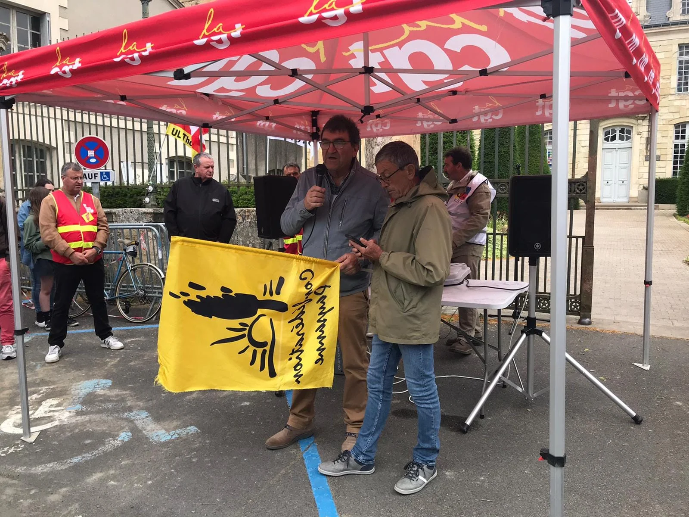
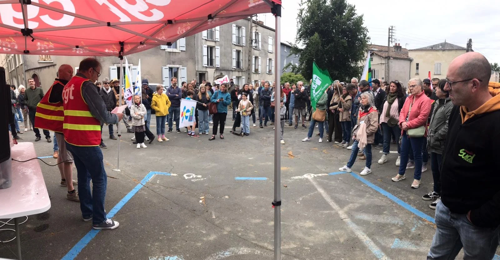
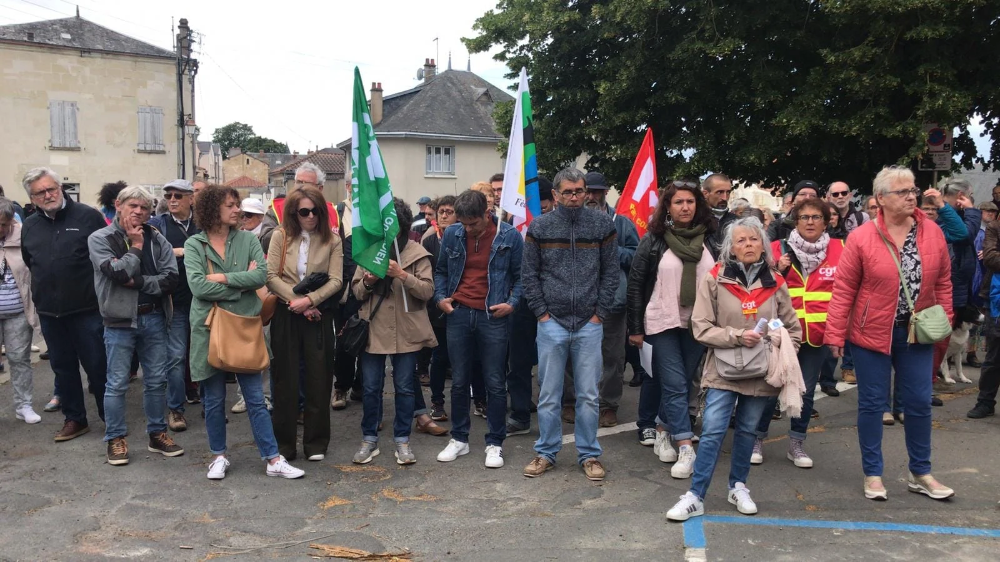

Compte rendu local
À Thouars, le rassemblement du 15 juin contre l’extrême droite
Date indiquée par Facebook · 16 juin 2024
Repères éditoriaux
À Thouars, les camarades ont rejoint le rassemblement du 15 juin 2024. Cette publication réunit trois photos conservées par la fédération. Le compte rendu départemental revient aussi sur Niort et Bressuire.
Texte conservé avec la publication
Rassemblements du 15 juin en Deux-Sèvres.
A Thouars
#nouveaufrontpopulaire
#PCF



Sources
Archive rouge · export Facebook · AR-0002-FB-01353
À lire aussi · Le 15 juin, plus de 1 500 manifestants selon le décompte du PCF 79